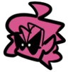

Парень
Парень (англ. Boyfriend) — это главный герой Friday Night Funkin. Чтобы получить одобрение на свидание с Девушкой, он должен спеть против её злого Папани, бывшей рок-звезды, а также многих других персонажей, которые стоят на его пути.
Девушка
Девушка (англ. Girlfriend) — это любовный интерес Парня, а также дочь Дорогого Папочки и Дорогой Мамочки. Обычно она сидит на колонках, покачивая головой в такт музыке, и подбадривает Парня.

Дорогой Папочка
Дорогой Папочка (англ. Daddy Dearest) - отец Девушки, муж Дорогой Мамочки и антагонист 1-й и 5-й недель. Он - бывшая рок-звезда и Парню надо заслужить его доверие, чтобы встречаться с его дочерью.

Дорогая Мамочка
Дорогая Мамочка (англ. Mommy Mearest) - это мать Девушки и жена Дорогого Папочки. Она является главным антагонистом Недели 4 и одним из антагонистов Недели 5.

Скид и Памп
Скид и Памп (англ. Skid and Pump) или Костяшка и Тыковка - антагонисты из игры Friday Night Funkin', а также главные персонажи серии анимаций от Sr. Pelo Spooky Month. Появляются во 2 неделе.

Монстр
Монстр (англ. Monster) - антагонист, который появляется во 2 неделе и в 5 неделе. Считается, что он главный злодей игры.

Пико
Пико (англ. Pico) - антагонист Недели 3. Его нанимает Папочка наёмным убийцей, чтобы убить Парня. Но в конечном итоге они сражаются в рэп-битве.

Сенпай
Сенпай (англ. Senpai) - антагонист 6 недели. Персонаж видеоигры, куда попадают Парень и Девушка. Пытается отбить у Парня Девушку в рэп-баттле.
Дух
Дух (англ. Spirit) - вторичный антагонист шестой недели. Он насильно захватывает тело Сенпая в финальном треке.

Танкмен
Танкист (англ. Tankman) - основной антагонист Недели 7, последней вышедшей на данный момент. Он является солдатом, который пытается остановить Парня и Девушку. Третий приглашенный персонаж, наряду со Скидом/Пампом и Пико.